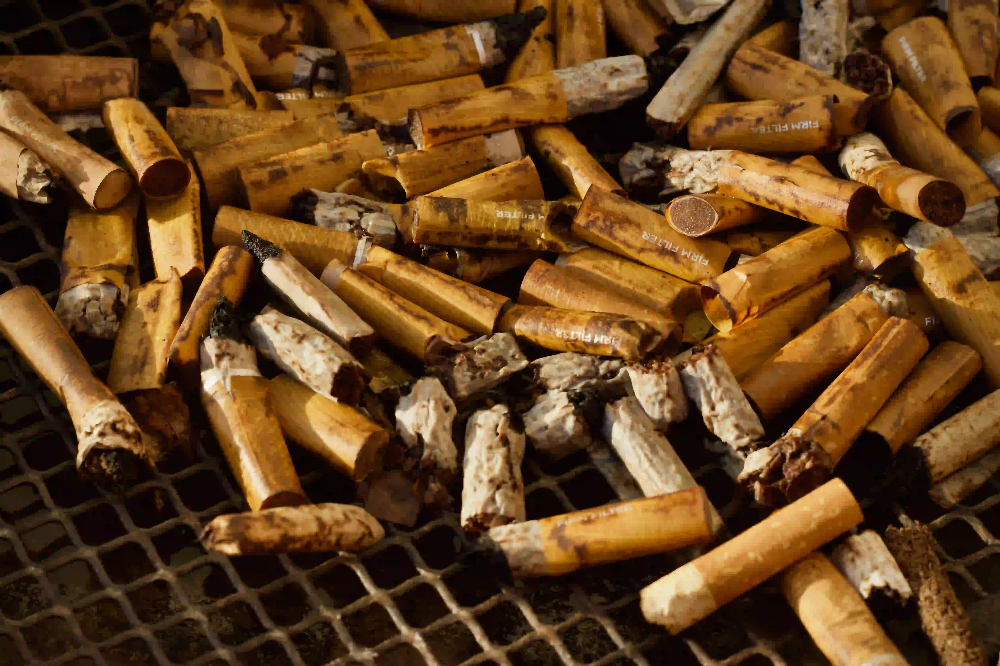

Umumnya residu
- Popok, pembalut, dan tisu sanitasi bekas
- Puntung rokok yang sudah benar-benar padam
- Spons, masker sekali pakai, dan debu sapuan
- Kemasan multilapis kotor tanpa program penerima

Residu adalah sisa setelah pilihan guna ulang, organik, dan daur ulang yang tersedia sudah diperiksa. Memisahkannya bukan menyerah—ini cara menjaga material lain tidak ikut kehilangan peluang.
Pastikan benar-benar residu, buat aman untuk petugas, tutup rapat, dan jangan mencampurnya dengan limbah berbahaya.
Sebuah bahan bisa bernilai di satu daerah dan menjadi residu di daerah lain. Sebelum memutuskan, periksa apakah bisa dihindari, digunakan ulang, dipisahkan, atau diterima program khusus.
Residu sering bersentuhan langsung dengan petugas dan peralatan. Kemasan yang rapat, kering, dan tidak tajam adalah bentuk tanggung jawab paling dasar.
Keluarkan botol, kertas bersih, sisa makanan, dan benda yang punya jalur khusus. Residu adalah hasil pemeriksaan, bukan nama lain untuk sampah campur.
Pastikan abu dan puntung tidak menyala. Bungkus pecahan tajam dalam wadah kaku berlabel dan ikuti aturan lokal—jangan biarkan menembus kantong.
Gunakan kantong secukupnya dan ikat rapat untuk menahan cairan atau bau. Jangan menginjak kantong karena benda tersembunyi dapat melukai.
Residu umumnya menuju pengelolaan akhir yang tersedia. Menjaganya terpisah membantu pengangkutan lebih aman dan mencegah material lain ikut terkontaminasi.
Material yang masih punya jalur lain dikeluarkan sebelum wadah ditutup.
Cairan, bau, benda kecil, dan sisi tajam dikendalikan untuk mengurangi risiko.
Wadah tertutup menjaga residu tidak tercecer atau mengotori muatan lain.
Residu mengikuti sistem pengelolaan akhir yang berlaku di wilayah setempat.